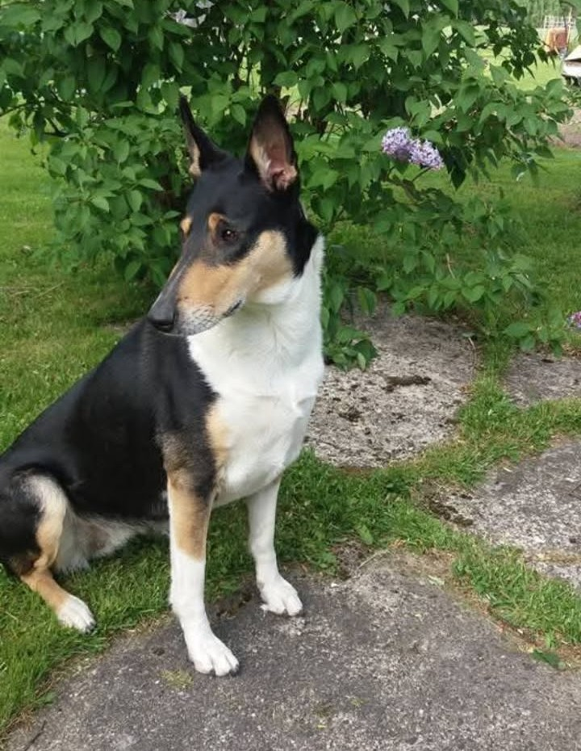

Kuka minä olen?

Olen nallemainen koira, joka rakastaa kaikkia. Minusta ihan parasta on leikkiä metsässä ja pitää pieni tauko kallion päällä sekä talvi ja lumikylvyt. Kastuminen on kurjaa. En myöskään ymmärrä haukkuvia koiria: miksi pitää puhua rumia?
Paras kaverini on Miina.
Hän on nahka, joka rakastaa juoksemista.

Minä leikin juoksuleikkejä Miinan kanssa.